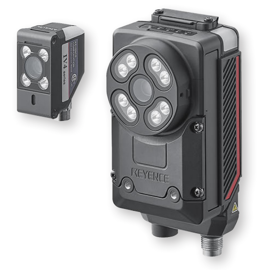
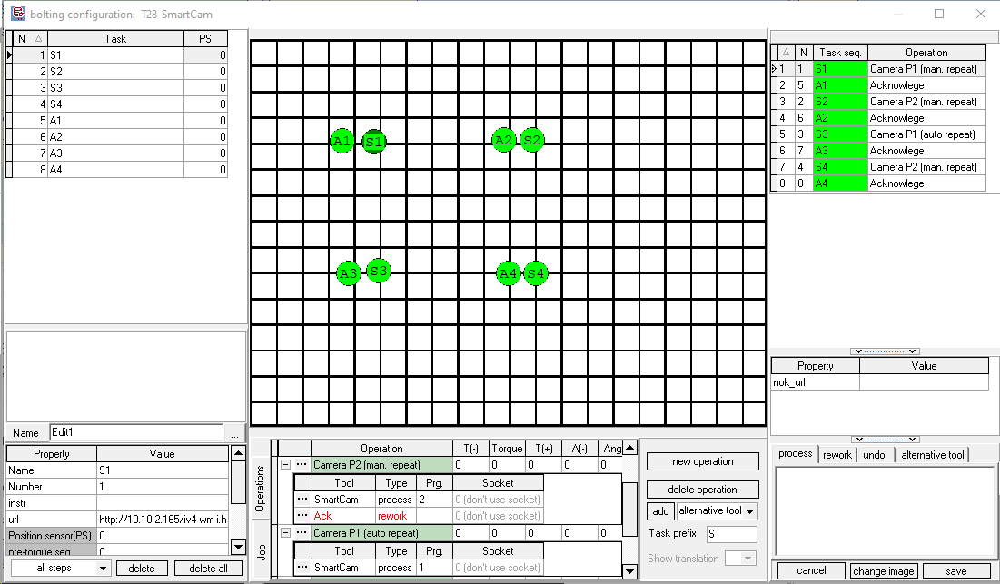

Keyence IV4 AI Vision Sensor
 The Keyence IV4 is a samrt vision sensor with added AI capabilities. It can detect parts without using position adjustment, can check if the correct amount of parts are in their proper location, and can read and count targets under tough conditions. You can find more details on the Keyence IV4 AI Vision Sensor product page. The IV Series is known for its simplicity to set up and overall good detection results, supporting increased brightness, wide-and-narrow field-of-view options. The IV4 is highly stable against environmental concerns like ambient lighting or slight finish changes, so even applications that are difficult for conventional vision sensors can be solved reliably with the IV4 and its improved AI tools.
{kind=link}
OGS controls the camera over the integrated EtherNet/IP interface.
Tool configuration
The camera system is configured using the Keyence IV Smart Navigator software. Please see the tools manual for details about how to setup the camera in general.
To change the cameras configuration, start the IV Smart Navigator software, go to Settings and Configuration and connect to (or search for) the camera. You will then typically see the following screen:
{kind=link}
Click the Program button in the top command bar to switch the device to setup mode (if not already active). You will then see the following screen:
{kind=link}
All configuration is now accessible through the buttons on the bottom bar.
Warning
Make sure to switch the device back into Run mode, else OGS will not be able to select a program!
EtherNet/IP and Web Monitor settings
To configure the EtherNet/IP interface, switch the camera to setup mode and click the Sensor Advanced button (or select Window --> Sensor advancedfrom the main menu), then select the Utility tab and click the Communication Settings button. This will then allow to configure the different communication options:
{kind=link}
By clicking the button labeled FieldNet/Comm. Unit (DL), the EtherNet/IP settings must be set as follows:
{kind=link}
To enable web monitoring (so you can show NOK results on the OGS screen), click the Web Monitor settings and configure as follows (see the Keyence manuals, if you want https instead of http):
{kind=link}
I/O configuration for external program selection
To allow selecting the active program through EtherNet/IP, make sure to check the Program Switching Method to be set to Panel/PC/Network/AUTO. The setting can be found at Sensor Advanced --> I/O Settings --> Input Settings --> Program Switching Method
Note
Make sure to configure the IP address of the device correctly (check Sensor Advanced --> Device Settings --> Network Settings)
Installation and Configuration with OGS
Tool registration and configuration
As the Keyence IV4 AI Smart Sensor driver is implemented as LUA custom tool, the instuction provided in the Lua custom tools documentation applies. A sample configuration for the lua driver camera_keyence in station.ini looks as follows:
[TOOL_DLL]
heLuaTool.dll=1
[CHANNELS]
20=LuaTool_KeyenceIV4
[LuaTool_KeyenceIV4]
DRIVER=heLuaTool
TYPE=camera_keyence
; IP-Address of the camera
ENIP_DEVICE=10.10.2.165
;
; Define a path to save the image
; If not given, then don't save
IMAGE_PATH=c:\monitor\camera
;
; Define the URL to grab the image from (by default is http://<ENIP_DEVICE>/iliveimage.jpg)
; Must be chaned, if you use https for the camera!
;IMG_URL=http://10.10.2.165/iliveimage.jpg
;
; (optional) define an NOK-URL
;NOK_URL=http://10.10.2.165/iv4-wm-i.html
; Other Keyence URLS:
; http://10.10.2.165/iv4-wa.html
; http://10.10.2.165/iv4-wm.html
; http://10.10.2.165/iv4-wm-i.html
; ethernet/ip debug level:
DEBUG=3
The parameters are:
DRIVER(required): Must be set toheLuaToolTYPE(required): Must be set tocamera_keyenceENIP_DEVICE: Specify the IP address of the cameraDEBUG: Set the debug level for the EtherNet/IP communication.IMAGE_PATH(optional): If given, then an image file is written for each camera result taken to the given path. The file name is using the tool ID code (including model, serial and whatever else is defined inBarCode_GetOperationID) and gets an appended timestamp.IMG_URL(optional): IfIMAGE_PATHis given, by default the URL to download the camera image ishttp://<ENIP_DEVICE>/iliveimage.jpg. By settingIMG_URLyou can override this URL and specify your own (e.g. if usinghttps)NOK_URL(optional): If given, then switches the process view webserver to the given URL, if the camera returns an NOK reading. Note that his can be overriden with the àction_propertynok_url. Note also, that the webbrowser must be enabled for the task for this to work (set theurlproperty for the task).
To load the Keyence camera driver, see below (OGS >= V3.1.6 ship the driver, so there is no need to load it manually anymore).
The driver for the camera is automatically loaded.
To load the Keyence camera driver, add lua_tool_camera_keyence to the requires table in the config.lua file in your project folder. Here is a sample config.lua file:
-- add the shared folder (..\shared)
OGS.Project.AddPath('../shared')
requires = {
"barcode",
"user_manager",
"lua_tool_camera_keyence", -- (1)
}
current_project.logo_file = '../shared/logo-rexroth.png'
current_project.billboard = 'http://127.0.0.1:60000/billboard.html'
- Add this line to include the
lua_tool_camera_keyence.luadriver in the project.
Editor configuration
Configuring the tool
In the Tools section of the Editor, create a new tool with a name of your choice (e.g. KeyenceIV4) in the custom tools section and assign it to the appropriate channel (ensure the channel number matches the one specified in the station.ini file).
Using the tool in a job
To use the Keyence camera in a job, add a task and assign an operation with the Keyence camera tool (e.g. KeyenceIV4, as you've defined earlier).
When the task gets active, OGS will select the program number as defined in the operation and trigger the camera. By default, if the camera tool is used in a final-task action, OGS repeats the action on tool NOK. In case of the camera, this would then immediately retrigger the camera until it returns an OK reading - without giving the operator a chance to fix the NOK cause. This is usually not what you want, so typically you will setup the camera tools operation with an added rework operation.
Here is a sample: 
{kind=link}
There are two operations shown:
- Camera P2 (man. repeat): This adds a rework operation using a manual acknowledge button. If the main process (camera) reports NOK, then the manual acknowledge gets active, basically waiting for the operator to hit the button and repeat the camera measurement (or abort). This also gives the oerator a chance to look at the annotated camera result view (see the url task property set to the cameras result image webpage), fix the issue and hit the button to repeat.
- Camera P1 (auto repeat): This only uses a main process (camera) tool. Therefore it will automatically repeat triggering the camera until it succeeds. Use this only in combination with a NOK retry counter - this can then e.g. try three times and then needs a supervisor to log in and complete.
Hint
Sometimes it can be useful to add a "pre-task" step or an additional task before the actual camera operation using an acknowledge button. This will give the operator some time (maybe also add some instruction text) to prepare the part under the camera - when he has everything ready, then hitting the buttonwill start the camera check.
Hint
If you want to capture the camera image, then add a grabimage tool task after the Keyence camera task. Set it up to grab the jpeg image from the cameras image URL and store it on disk (and upload to a data collection server).